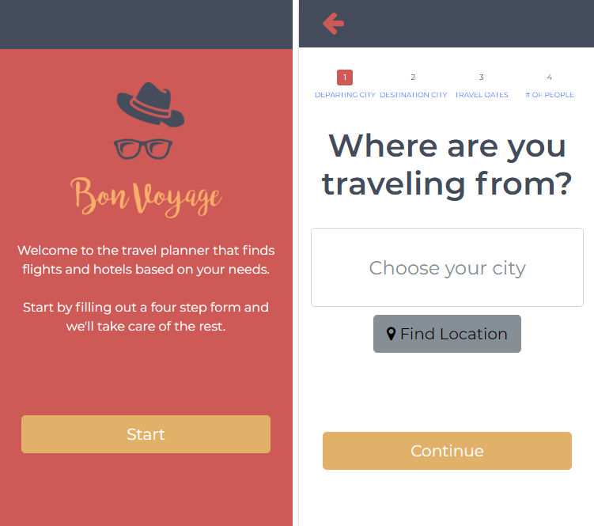

The Task
The task was to built a web application designed to serve people age 40 and over. We focused our design on the mobile user experience. This project was completed in teams of 3.
Needfinding
Our observations center around the design theme for the quarter of designing for people age 40 and over. We wanted to learn how people of this age group used online tools to book hotels and flights for vacation. In order to achieve this, we asked 3 participants who were in the process of buying flights and hotels for their vacations to demonstrate how they would go about it. Although this activity is applicable to all ages, we wanted to understand specific needs that are only present for our target users. As expected, though to a greater extent than originally thought, there were several interesting breakdowns which are unique to people age 40 and over due to a fundamental difference in technological understanding.We came up with a list of user needs and wrote a point of view statement:
Booking travel should be simple and flexible to a person’s unique needs, regardless of their age and how familiar they are with technology. Due to age and unfamiliarity with technology, people 40 and over expect one thing from the interface and get another when booking travel with current online solutions.
Prototyping
User Testing and A/B Testing
Building a Brand
We decided on the name "Bon Voyage" because it is a simple name with a positive connotation of travel. We wanted our brand to have an assocation with the fun of travelling. To make the brand more unique, we thought we would also include our concept of being a digital travel agent into the app's branding. I came up with three possible logos based on these ideas.The second logo idea evokes the idea of a holiday getaway and is the most connected to the name "Bon Voyage." However, since our application books flights and hotels, a boat wouldn't be the most fitting image to use as our logo.
The third logo most strong uses the agent imagery. In contrast to the friendly branding of the first two ideas, this logo sets a theme of a secret getaway rather than a relaxing holiday.
Our team decided that the first two were more fitting of the direction we wanted to go in.

Mockup with first logo